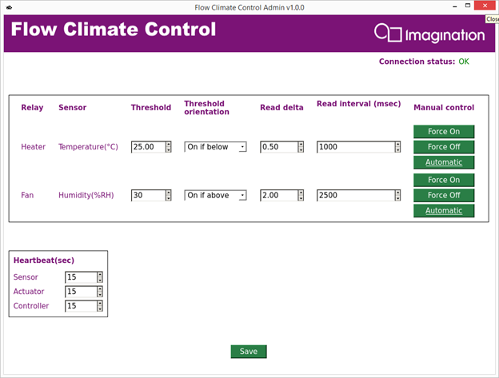
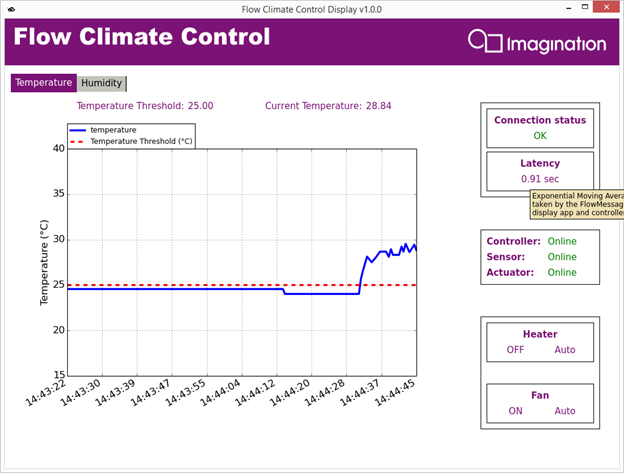

Starting the System
Wi-Fire
Powering your Wi-Fire board
Connect your Wi-Fire board to a PC or laptop computer with a USB cable, unless your application uses more than 300 mA, in which case you should use an external power supply rated at 5V DC, 500 mA. Follow the instructions below to power up your board using either a USB cable, or external power supply
Using a USB cable
- Use Jumper J16 (C) to select the USB cable (UART) power source.
- Connect the Wi-Fire's USB mini B connector (B) to your computer's USB port.
Using a 5V 500 mA power supply
- Use Jumper J16 (C) to select the 'EXT' power source.
- Connect the power supply to Wi-Fire's 5V DC power connector (A).
Configuring serial console for Wi-Fire boards
- Connect the board to your PC using a mini USB cable - For Windows, wait for the driver installation to complete.
- You will need to identify the COM port that the Wi-Fire board is connected to (in case of windows as host PC - check 'Device Manager' > 'Ports') or /dev/ttyUSBx (in case of Linux as host PC).
- Install and run any serial terminal program - e.g. Tera Term, minicom, PuTTY, Hyper Terminal etc
- On Windows, some utilities automatically detects the COM port so that you can connect to that particular USB Serial Port i.e. for ex. COM1 port.
- For linux, check /dev/tty list and plug/unplug usb cable to the board and look for which device is getting added in the list after connecting the usb cable. e.g. its /dev/ttyUSB0.
- Configure the serial terminal program to use this port, with: baud rate of 115200, 8 data bits, 1 stop bit and no parity, hardware control as OFF.
Wi-Fire Sensor
Hardware Configuration
- Connect the Grove Arduino Base Shield to the Wi-Fire board
- Connect the Grove Temperature Sensor to port A2 of the Grove Arduino Base Shield
- Connect the Grove Temperature and Humidity Sensor to port A1 of the Grove Arduino Base Shield
To register your Wi-Fire board as a Sensor with this account, you need a Device Registration Key:
-
Please follow the instructions:
- Log in to your FlowCloud account at http://flow.imgtec.com/developers
- Go to the 'My Devices' page.
- Select the 'Registration' tab.
- From the drop-down list of device types, select ClimateControlDemoSensor.
- Under 'Registration Method B', click the 'Get New Code' button to retrieve your device registration key.
- Take a note of your device registration key.
Using the terminal emulator, enter the following sequence of commands
- set devreg_key - Follow the on-screen instructions and enter the device registration key that you have just generated when prompted
- set network_config - Follow the instructions for setting up your wireless access point credentials. When prompted whether to force the device into interactive mode next time it reboots, be sure to enter 'y' for yes.
- reboot - This will restart Wi-Fire in Wi-Fi connected mode.
You should see following within the serial console output:
s/w version Type '1.0'[INFO] ---------Initialize ClimateSensor------
...
[INFO] ---------Initialize ClimateSensor Done------
Note that the console output within the initialization process will vary depending on the state of your Climate Control Demo at runtime.
Wi-Fire Actuator
Hardware Configuration
- Connect the Grove Arduino Base Shield to the Wi-Fire board
- Connect a Grove Relay to port D2
- Connect a Grove Relay to port D3
To register your Wi-Fire board as an Actuator with this account, you need a Device Registration Key:
-
Please follow the instructions:
- Log in to your FlowCloud account at http://flow.imgtec.com/developers
- Go to the 'My Devices' page.
- Select the 'Registration' tab.
- From the drop-down list of device types, select ClimateControlDemoActuator.
- Under 'Registration Method B', click the 'Get New Code' button to retrieve your device registration key.
- Take a note of your device registration key.
Using the terminal emulator, enter the following sequence of commands
- set devreg_key - Follow the on-screen instructions and enter the device registration key that you have just generated when prompted
- set network_config - Follow the instructions for setting up your wireless access point credentials. When prompted whether to force the device into interactive mode next time it reboots, be sure to enter 'y' for yes.
- reboot - This will restart Wi-Fire in Wi-Fi connected mode.
You should see these lines within your console output:
s/w version Type '1.0'[INFO] ---------Initialize Climate Actuator------
...
[INFO] ---------Initialization of Climate Actuator Done------
Note that the console output within the initialization process will vary depending on the state of your Climate Control Demo at runtime.
Ci20 Controller
To register your Ci20 board as Controller you need a Device Registration Key:
-
Please follow the instructions
- Log in to your FlowCloud account at http://flow.imgtec.com/developers
- Go to the 'My Devices' page.
- Select the 'Registration' tab.
- From the drop-down list of device types, select ClimateControlDemoController.
- Under 'Registration Method B', click the 'Get New Code' button to retrieve your device registration key.
- Take a note of your device registration key.
Start the Controller app on Ci20 board
The flowclimatecontroller application requires Flow server configuration settings in the flow_controller.cnf file.
- Either you can create this "flow_controller.cnf" file upfront with all required details, else it will ask for all the details on the command line when running the controller for the first time. Once you have provided the details, flowclimatecontroller will be registered to your account on the FlowCloud server. "flow_controller.cnf" should be in the same folder as the application.
-
The fields in flow_controller.cnf:
Server_Address=http://ws-uat.flowworld.com
Auth_Key=Ph3bY5kkU4P6vmtT
Secret_Key=Sd1SVBfYtGfQvUCR
Device_Type=ClimateControlDemoController
MAC_Addr=
Serial_Num=FFFFFFFFFFFF
Device_Name=
Devreg_Key=
- Fill in the MAC address of your device (entering "ifconfig" in the terminal will display the "HWaddr" associated with eth0 - this is your MAC address - enter it without colons e.g. A1251B3CC4F2)
- Give the device a name that will allow you to identify it
- Enter the device registration key generated on the Flow Developer Website
If this has worked successfully you can run the controller from a terminal by navigating to it's directory and typing ./flowclimatecontroller.mipsel.bin. If this does not work make sure that the file is marked as "executable". You should see a console output similar to this example:
Flow Interface initialized successfully
[INFO]: ---------Initialize Controller------
Entering Interactive Mode
You can also start the flowclimatecontroller in debug mode to see more detailed console output and debug information. Just run "./flowclimatecontroller.mipsel.bin DEBUG_LEVEL 4".
Admin app on Linux PC
Go to the pc_app folder.
#python climate_control/admin
You can check session logs for the Admin app in climate_control/logs.

Display app on Linux PC
Go to the pc_app folder from different terminal.
#python climate_control/display
You can check session logs for the Display app in climate_control/logs
